| Name | Image | Tier | Pool | Description | Flavor |
|---|
| Aerogel |  | Common | | Upon pickup, choose a card. Whenever you shuffle your draw pile with this card in it, it will end up on top. | Weighs next to nothing, and makes a great insulator against bad luck. |
| Aluminium Foil | | Common | | Card rewards tend to be Upgraded and of a higher rarity. | Maybe if you put this on all your cards, people would respect you. |
| Boomerang |  | Common | | Put the fourth card you play each turn on top of your draw pile. | If you love something, let it go. Or just frickin' chuck it. |
| Buckler | | Common | | The next 2 times you play an upgradeable card that's in your deck, Upgrade it permanently. | Emblazoned with the famed cygnet signet of Merek. |
| Crucible |  | Common | | Whenever you remove an Upgraded card from your deck, Upgrade2 random cards in your deck. | As long as it can handle temps up to 451°F, it should do the job. |
| Crutches | 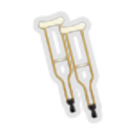 | Common | | Whenever you get a Status, enemies lose 1Strength during their next turn. | You're not the one that's gonna need these. |
| Elizabethan Collar |  | Common | | Upon pickup, your Curses become Injuries. All Curses you obtain become Injuries. | If you'd just stop messing with it—! |
| Expired Coupon |  | Common | | When you reach 70 or more total unblocked damage dealt in a combat, deal 10 damage to ALL enemies. | Good for 10% off an "ass-beating." Who printed this thing, anyway? |
| Ferry Pass |  | Common | | The next time you play every unique playable card in your deck in one combat, add a Rare relic to that combat's reward. | It reads, "Enjoy your trip to Lastcel Isle!" |
| Ivory Trinket | 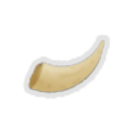 | Common | Purple | Every 5th time you Retain a Miracle, add a Miracle into your hand. | Someone cut the tusk from an elephant, just to whittle it into a smaller tusk. But why? |
| Knoch | | Common | | Enemies with 25% or less health are Weak. | It keeps sinking to the bottom of your pack. |
| Party Balloon |  | Common | | Power cards start each combat in the top half of your draw pile. | Once you pop, the fun immediately stops. |
| Porcupine Quills | | Common | | Whenever you receive 12 or more unblocked damage, deal that much damage back. | If these get ya, you must have really deserved it. |
| Promissory Notes | 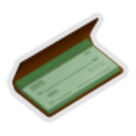 | Common | | Whenever you receive a debuff from an enemy, your first Attack against that enemy next turn deals 5 additional damage. | An ancient instrument of subterfuge. |
| Radioactive Pellet |  | Common | Green | Poison doesn't decrement. | The secret weapon of the world's most dastardly villains. |
| Rose-Tinted Glasses |  | Common | | The first 2 times you draw a Status each combat, Exhaust it and draw a card. | You know what? Things aren't so bad. |
| Rosewood Lute |  | Common | | Whenever you block damage exactly, gain [E] next turn. | Anyway, here's "Wonderspire." |
| Sharkskin Sheath | 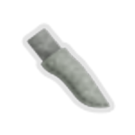 | Common | | Whenever you end your turn with no cards in hand, draw a card next turn. | If only you had a sharkskin knife to put in it. |
| Silk Glove |  | Common | | Whenever you would discard a single card at the end of your turn, Retain it. | Left behind by a fancy lady who doesn't mess around. |
| Spinner |  | Common | | Whenever you play a card of a different type than the previous that turn, gain 1Block. | Please don't land on red, please don't land on red... son of a—! |
| Stiletto |  | Common | | Enemies gain 50% less Block. | Designed to slip between the plates and links of most any armor. |
| Stimpack |  | Common | Red | The first time your HP drops to 50% or below each combat, your Attacks deal double damage for 1 turn. | The dogtags bear the initials "T.O.P." |
| Tattered Rug | 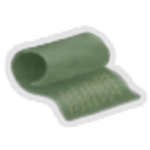 | Common | | You can sell potions to the Merchant. | What, you think anyone can just set up shop? |
| Thumb Drive |  | Common | Blue | At the start of each combat, Channel1Data. | Who's got three thumbs and a backup copy of the ancient Internet? This AI. |
| Training Wheel |  | Common | | Whenever you draw a hand with no Attacks or no Skills, put a random card of that type from your draw pile into your hand. | Its exterior is pristine, but it's so rusted on the inside that it can barely turn. |
| Tuning Fork |  | Common | | Whenever you break an enemy's Block exactly, deal 10 damage to it. | If you try eating with it, you're liable to break a tooth. |
| Weak Tea |  | Common | | The first 2 Colorless cards you play each combat cost 1 less. | If you can sleep after drinking it, what's the point? |
| Ball Bearing | | Uncommon | | Whenever you shuffle your draw pile, shuffle in a FlashofSteel or Finesse, chosen randomly. | Keeps things running smooth. |
| Bellows | 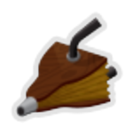 | Uncommon | Red | Every 5 times you Exhaust a card, shuffle a card from your exhaust pile into your draw pile. | Boy, if this were bigger than an inch across, it could really come in handy. |
| Blood Sugar | 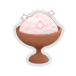 | Uncommon | | Whenever you enter a room, heal 7 HP, then decrease that number by 1.Rest to reset it to 7. | You know you shouldn't, but you just can't help yourself! |
| Boiling Flask | 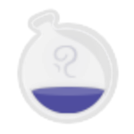 | Uncommon | | At the start of each combat, if your potion slots are full, choose a Vapor card and add it into your hand. | A round-bottom boiling flask, five thousand milliliters! |
| Feather Duster | 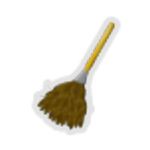 | Uncommon | | Upon pickup, remove any number of cards from your deck except Strike, Defend, and Curse cards. | "My life's mistakes, they lay about me like so much dust." - Cademo |
| Firecrackers |  | Uncommon | | Overkill damage is dealt to a random enemy. | Makes quite a racket. Keep it down out there, y'dang kids! |
| Gummy Vitamins | 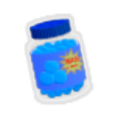 | Uncommon | | Right click during combat to activate. Once per turn, you may draw a card, then shuffle a Slimed into your draw pile. | Mmm, chewy! |
| Hardlight |  | Uncommon | Red | When your HP falls to 10 or less for the first time, permanently gain 2Strength. | The words "DO NOT FOLLOW" have been scratched under the brim. |
| Hot Poker |  | Uncommon | | Whenever you draw a card during your turn, deal damage equal to its cost to a random enemy. | Wouldn't want to be caught at the business end of this thing. |
| Ice Cube Tray |  | Uncommon | | For every 4 cards you add to your deck, you may remove a card from your deck. | Everyone who knew how to use this thing died a long time ago. |
| Iridium Chain | 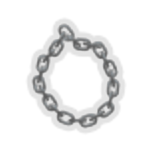 | Uncommon | | Whenever you play a Power card, put an Ethereal copy into your hand that costs 1 more. | You try to count the links, but never come up with the same number twice. |
| Jackalope Antler | | Uncommon | | Whenever an enemy dies, refund the Energy cost of the last card you played. | Whatever creature this came from must be running around lopsided. |
| Lead Dart |  | Uncommon | | The first time each combat you have 10 cards in hand, gain 3Strength. | Form over function? Function over form? "How about neither?" it seems to ask. |
| Love-Emitting Diode | 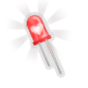 | Uncommon | Blue | Positive Focus affects your rightmost Orb 3 times. | Spread the love, pursuant to the principles of the inverse-square law. |
| Medicine Ball | | Uncommon | Red | You have additional Strength equal to the highest Strength among enemies (0 minimum). | If only you had someone to toss this around with... |
| Mudwin's Cradle |  | Uncommon | Purple | Entering Divinity requires 3 less Mantra. | Most popular desk toy. |
| New Friend | 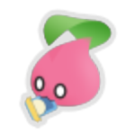 | Uncommon | | Strikes and Defends Exhaust50% of the time. | This little guy won't stop following you... and boy is he hungry. |
| Paper Snowflake |  | Uncommon | | The newest card in your deck that costs 1 or more costs 1 less. | Is this what this is supposed to look like? |
| Peacock Shield | | Uncommon | Purple | Whenever you enter Wrath, double your Block. | Presents a remarkable defense. |
| Plasma Lobster |  | Uncommon | | Increases your attack damage by 2 while you have Block. | Smells of petrichor. |
| Prayer Box |  | Uncommon | Purple | You keep your Mantra between combats. | It's the perfect shape to hold your square prayers. |
| Princely Helmet |  | Uncommon | | Double the first X Block you gain each combat, where X is 8 times the current Act. | Way too small to fit on your head. If it were Ours, We'd make it much bigger. |
| Purple-Tinged Leaf |  | Uncommon | | Upon pickup, choose an Attack. Whenever you play this card, heal 1 HP. | This leaf has the appearance, unique in all the plant kingdom, of having been drawn by a grade schooler. |
| Quartz Cube | 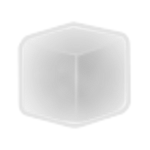 | Uncommon | | At the start of each combat with 3 or more enemies, apply 2Stunned and 2Invincible to one. | It's like an ice cube that never melts, but also isn't cold. |
| Runic Remote | 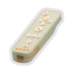 | Uncommon | | Whenever you win a combat without taking damage, you may add a card corresponding to a defeated enemy into your deck. | Take hold of your destiny. |
| Sculpting Steel |  | Uncommon | | Upon pickup, becomes a copy of a random Common, Uncommon,Rare, or Shop relic you already have. | Malleable as clay one second, hard as stone the next. |
| Short Fuse | 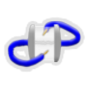 | Uncommon | Blue | Your Lightning Orbs target the enemy with the least HP. | It might blow at any moment. |
| Sideboard | 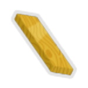 | Uncommon | | Chosen card rewards go into a separate pile. You can move cards from that pile to your deck between combats. | A board for you to keep cards... on? In? |
| Sod | 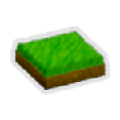 | Uncommon | | Put an Upgraded copy of every 8th unupgraded card you play into your hand. | Contrary to popular belief, it's not greener on the other side. It's brown. |
| Spire of Hannoy | 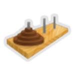 | Uncommon | | Weak and Vulnerable are 10% more effective against enemies for every stack past the 1st (max 30%). | This puzzle's namesake Spire must have been even deadlier and more perplexing than this one. |
| Splatula |  | Uncommon | | Whenever you Attack an enemy for half or more of its Max HP, set its HP to 0. | Features a nonstick coating for easy cleanup. |
| Tank Top |  | Uncommon | | Whenever you Attack the enemy with the most HP, if there are 2 or more enemies, deal 3 damage to the front enemy. | The rusted remnant of a once-great warrior tribe. |
| Thinking Cap |  | Uncommon | | At the start of each combat, draw the second-to-last card you played last combat. (Only cards in your deck count.) | With this big ol' cone on your head, everyone can see how smart you are. |
| Toy Rocket |  | Uncommon | | The first time you play a cost 3, cost 2, and cost 1 card in a row each combat, add a powerful cost 0Attack into your hand. | We choose to go to the Spire. |
| Traffic Cone | | Uncommon | | The first time an enemy does something other than attack, it loses 2Strength. | In the dark of the Spire, its glinting stripes attain an unlikely menace. |
| Trident Head |  | Uncommon | | The first card you play on a single enemy each combat is copied to all other enemies. | A part of the weapon wielded by the fabled Wave King. |
| Underdog Bone |  | Uncommon | | Whenever you play an unupgraded card, if there's an Upgraded copy in your draw pile, put it into your hand. | Someone must have been a very good boy or girl. |
| Vitrine | 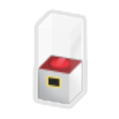 | Uncommon | | Upon pickup, remove a card from your deck. You may shuffle it into your draw pile anytime during your turn. Right click to activate. | The perfect place to present your most prized possessions. |
| Witchy Dice |  | Uncommon | | At the start of each combat, play a random card of any color. | What a lucky find! #blessed |
| Conveyor |  | Rare | Blue | At the start of your turn, Channel a type of Orb of which you have 3 or more Channeled. | Takes you where you want to go. |
| Dhvaja | 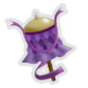 | Rare | Purple | Whenever you enter Divinity,Divinity's damage multiplier increases by 1 this combat. | Victory shall be yours... eventually. |
| EXA |  | Rare | Blue | At the start of your turn, if you have no Lightning,Frost, and/or Dark Orbs Channeled,Channel an Orb of a random missing type. | Only your superhuman eyesight allows you to see this nanoscopic machine. |
| Fishing Reel |  | Rare | | Each turn, you can pay for 1 card with next turn's Energy. | There's always the next sucker. |
| Kill Pill |  | Rare | Green | The first time you apply Poison to each enemy each turn, it triggers immediately. | Would look pretty cool on the back of a leather jacket. |
| Knife Block | 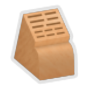 | Rare | Green | Whenever you create Shivs, create an additional one. | "Who could ever need this many knives?" asked the world's stupidest person. |
| Ouija Board |  | Rare | | Right click during combat to activate. Once per turn, pay the cost of a card in your discard pile plus 1 to play it and shuffle it into your draw pile. | Only as mysterious as you make it. |
| Pushpin |  | Rare | Green | The cards in your opening hand Retain for the rest of combat. | Sometimes used to solve murders, but the most skilled assassins can use them to commit one. |
| Sheep's Eye Marble |  | Rare | | Whenever you play two copies of the same card in a row, play it again. | You feel dumber just looking at it. |
| Twin Pearls |  | Rare | | You start each turn with Pearlescence in your hand. | They are completely identical in every way, impossible to tell apart. Close enough, anyway. |
| The Holy Grail |  | Special | | The first time you would die each combat, die next turn instead. | You have chosen... wisely. |
| Big Hammer |  | Boss | Red | You may upgrade Red cards a second time. Upon pickup, Upgrade an Upgraded card. | Truly, it is the biggest hammer you have ever seen. |
| Craggleroot |  | Boss | | Gain [E] at the start of your turn. The first card you draw each turn costs 1 more this combat. | This root has seen some hard times. Maybe it will see you through hard times as well? |
| Ember | 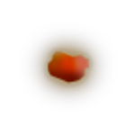 | Boss | | Gain [E] at the start of your turn. Take 2 damage for each Energy beyond the third you spend each turn. | Hachi machi, that's hot! |
| Free Samples | 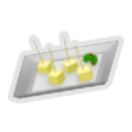 | Boss | | Gain [E] at the start of your turn. Whenever an enemy deals unblocked attack damage to you, it gains 1Intangible if it's not already. | Everyone's going to want a piece. |
| Kinked Spring | 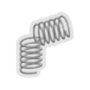 | Boss | | Gain [E] at the start of your turn. Your discard pile only shuffles into your draw pile when you end your turn with an empty draw pile. | Someone overwound this thing, and it ain't comin' back. |
| Rabbit Ears |  | Boss | Blue | You may upgrade Blue cards a second time. Upon pickup, Upgrade an Upgraded card. | "You're listening to 98.7 FM: The Fever. Don't touch that dial!" |
| Red Cape |  | Boss | | Gain [E] at the start of your turn. Whenever you Attack a single enemy, other enemies can't be targeted until it dies. | Who wants the horns? |
| Red Paperclip |  | Boss | | Gain [E] at the start of your turn. Replaces 2 random Common or Uncommon relics. | A powerful symbol of barter. |
| Rustam's Pendant |  | Boss | | Gain [E] at the start of your turn. Has a different drawback for each character. | It's just a hunk of metal, but it seems to know something about you. |
| Short Straw |  | Boss | | At the start of your turn, gain [E] and choose a random card in your hand. If it's still in your hand at the end of the turn, you lose 10 HP. | This may not have been the pick. |
| Skeleton Key |  | Boss | Green | You may upgrade Green cards a second time. Upon pickup, Upgrade an Upgraded card. | What does it unlock? You. |
| Solitaire | | Boss | Purple | You may upgrade Purple cards a second time. Upon pickup, Upgrade an Upgraded card. | You dreamed of it, once. How it crossed over into reality is a mystery. |
| Third Arm |  | Boss | | Start each combat with a cost 0Power in your draw pile that gives you [E] every turn. | It's tiny, and it doesn't even have fingers. |
| Writ of Mandamus | 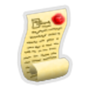 | Boss | | Gain [E] at the start of your turn. At the end of your turn, you lose 5Block. | It begins, "Whatever you're thinking about doing: hold it, mister." |
| Bookmark |  | Shop | | At the start of each combat, draw an extra card for each Innate card in your deck. | "Now, where was I..." |
| Bouncer | 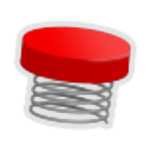 | Shop | Green | Upon pickup, choose a card. It becomes Unplayable. If it's discarded from your hand, play it. | I hope you have a plan for the landing. |
| Broken Clock | | Shop | | Each combat starts with two player turns, then two enemy turns. | This one is only wrong twice a day, somehow, and right the rest of the time. |
| Citrus Reamer |  | Shop | | The first time each turn you have 10 cards in hand, gain [E] . | Why squeeze when you can ream? |
| Crusader's Map | 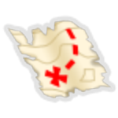 | Shop | | Points the way to a fabled fontofimmortality. | Search for the truth. |
| Finger Trap |  | Shop | | You can't lose HP during your turn. | Maybe if you chilled out for a second, you could get it off. |
| Oven Mitt |  | Shop | | Prevent the next 6 times you would lose HP. | It's already starting to fall apart. |
| Rattle Coin | | Shop | | Double the first unblocked attack damage dealt to you and ALL enemies each combat. | Both sides depict the same strangely familiar creature. |
| Soularoid | | Shop | | Whenever you play a non-Status card with a different name than any card in your deck, add a copy of it to your deck. | Those guys with the beards were right...?! |
| Tam-Tam | 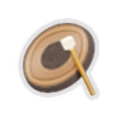 | Shop | Red | Whenever you start your turn with Block, you and ALL enemies gain 1Strength. | GONG. |

{kind=link}


{kind=link}
{kind=link}


{kind=link}

{kind=link}


{kind=link}
{kind=link}


{kind=link}

{kind=link}


{kind=link}

{kind=link}


{kind=link}
{kind=link}


{kind=link}